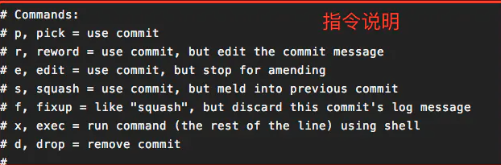

实战中开发git
初始化仓库
git init
克隆仓库
git clone git地址
设置用户名和邮箱(–global 为全局参数，表明本地所有Git仓库都会使用这个配置)
git config –global user,name “用户名”
git config –global user.email “用户邮箱”
链接远程仓库
git remote add origin git地址
当修改密码后需要git push 时报http denied错误时
输入”git config –system –unset credential.helper”命令（重置远程端的用户名和密码）
或
git config –global http.emptyAuth true
当本地查看远程分支时
** git fetch origin。拉取远程分支列表
| git branch | ||
|---|---|---|
| 空 | 查看本地分支 | |
| -r | 查看远程分支 | |
| -a | 查看全部焚毁 |
撤销git add . 的方法 -> git restore .
撤销git commit -m “注释”，
| git reset | –hard | 删除工作空间改动代码，撤销git add，撤销commit . 注意完成这个操作后，就恢复到了上一次的commit状态。 |
|---|---|---|
| –mixed | 不删除工作空间改动代码，撤销git add，撤销commit .为默认参数,git reset –mixed HEAD^==git reset HEAD^ | |
| –sort | 不删除工作空间改动代码，不撤销git add ，撤销commit | |
| git commit | –amend | 如果commit注释写错了，改一下注释 |
推送仓库
| git push | -u | 建立+推送远程分支 |
|---|---|---|
| -f | 强制覆盖远程分支 |
暂时存储工作区代码，（可以在分支间横跳代码）
| git stash save “save message” | 执行存储时，添加备注，方便查找，只有git stash 也要可以的，但查找时不方便识别。 |
|---|---|
| git stash list | 查看stash了哪些存储 |
| git stash show | 显示做了哪些改动，默认show第一个存储,如果要显示其他存贮，后面加stash@{$num}，比如第二个 git stash show stash@{1} |
| git stash show -p | 显示第一个存储的改动，如果想显示其他存存储，命令：git stash show stash@{$num} -p ，比如第二个：git stash show stash@{1} -p |
| git stash apply | 应用某个存储,但不会把存储从存储列表中删除，默认使用第一个存储,即stash@{0}，如果要使用其他个，git stash apply stash@{$num} ， 比如第二个：git stash apply stash@{1} |
| git stash pop | 命令恢复之前缓存的工作目录，将缓存堆栈中的对应stash删除，并将对应修改应用到当前的工作目录下,默认为第一个stash,即stash@{0}，如果要应用并删除其他stash，命令：git stash pop stash@{$num} ，比如应用并删除第二个：git stash pop stash@{1} |
| git stash drop stash@{$num} | 丢弃stash@{$num}存储，从列表中删除这个存储 |
| git stash clear | 删除所有缓存的stash |
创建分支
git branch test: 基于当前commit创建test分支。.git/HEAD 文件中记录了当前分支名字。
git checkout -b test; 创建并切换到test分支
删除分支
git branch -d test：删除本地test分支
git branch -D test： test分支还没有合入当前分支，所以要用-D参数才能删掉。
git push origin –delete test 删除远程test分支
git push origin :test 删除远程test分支
查看分支
| git | branch | 空 | 列出当前分支清单 |
|---|---|---|---|
| -r | 查看远程分支 | ||
| -a | 查看远程分支和本地分支 | ||
| -v | 查看各个分支最后一个提交信息 | ||
| –merged | 查看哪些分支已经合并入当前分支 |
拉取分支
git fetch origin 同步远程服务器的数据到本地
git checkout -b test origin/test_remote 将远程分支test_remote拉取下来到本地test分支
git checkout test 将远程分支test拉取下来到本地test分支
git pull test从远程分支test 中checkout下来的本地分支test成为跟踪分支，使用git pull或者git push就会操作到对应的远程分支test
git merge的参数
merge的两个分支要有历史关联，没有的话需要添加git merge master –allow-unrelated-histories，参数。
| git | merge | 合并分支到当前分支 | |
|---|---|---|---|
| –ff | 快速合并，这个是默认的参数。如果合并过程出现冲突，Git会显示出冲突并等待手动解决 | ||
| –ff-only | 只有能快速合并的情况才合并。如果合并过程出现冲突，Git会自动abort此次merge | ||
| –no-ff | 不使用快速合并。会生成一次新的提交记录，这个记录只是标识在这里进行了一次merge操作（目前还没想到应用场景） | ||
| –squash | 压缩合并。将待合并的分支的内容压缩成一个新的提交合并进来 |
git rebase的参数
| git | rebase | 分布湿合并分支 |
|---|---|---|
| -i HEAD~num | 合并后num个commit记录 | p表示采用，s表示将当前commit合并到上一commit，d表示删除当前commit，。。。 |
| -i [start] [end] | 左开右闭 | start和end分别代码commit id |
| -i [start] [end] | onto [newbase] | 将部分分支复制到新commit上，实现中间一大段commit的删除 |
| 通过git rebase -i [start] [end] 或者 git rebase -i HEAD~num将本地的多次提交合并为一个，以简化提交历史。(左开右闭) |

在用d时可删除部分分支。s时前面得有pick，
本地有多个提交时,如果不进行这一步,在git rebase master时会多次解决冲突(最坏情况下,每一个提交都会相应解决一个冲突)
复制部分分支
git rebase [startpoint] [endpoint] --onto [branchName] （[startpoint] [endpoint]指定的是一个前开后闭的区间，将该区间中的分支复制到另一个分支上）
运行git rebase –continue命令继续变基。
运行git rebase –abort命令回到rebase之前的状态。
个人见解，rebase就是操作本地的提交记录实现对commit的简化。git rebase branchname，在次合并分支，解决冲突，将冲突解决在开发分支上，避免主分支上出现脏分支记录。
git commit 记录查询
| git | show | 空 | .查看最新的commit |
|---|---|---|---|
| commitId | .查看指定commit hashID的所有修改： | ||
| commitId fileName | .查看某次commit中具体某个文件的修改： |